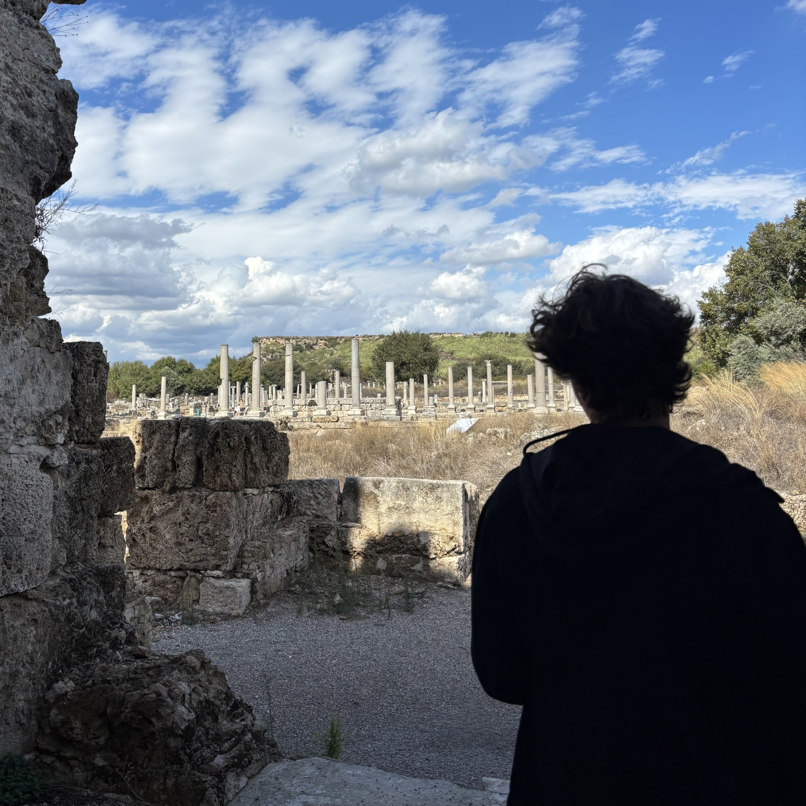

Главная

Клим Владислав 251-361
Обо мне
Привет, меня зовут Владислав, мне 19 лет, я студент 2-го курса Прикладной информатики в Московском Политехе. Специализируюсь на Desktop-разработке, активно изучаю C#, SQL, английский. Также имею опыт в обработки звука.
В свободное время занимаюсь пауэрлифтингом, пишу музыку, играю в видеоигры.
Навыки
| Навык | Уровень | Комментарий |
|---|---|---|
| С# | Junior- | Основные знания языка уже есть |
| SQL | Начальный | Базовые запросы |
| Английский | B1 | Чтение и аудирование на неплохом уровне |
| Git | Начальный | Основные команды |
Контакты
Телефон: +7 (985) 772-44-44
Почта: vladislavf1021@gmail.com
Город: Балашиха